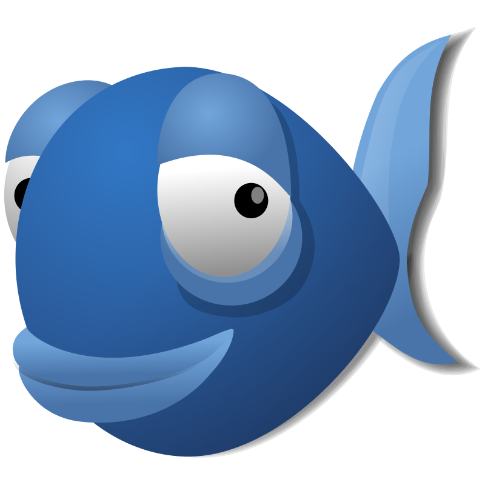
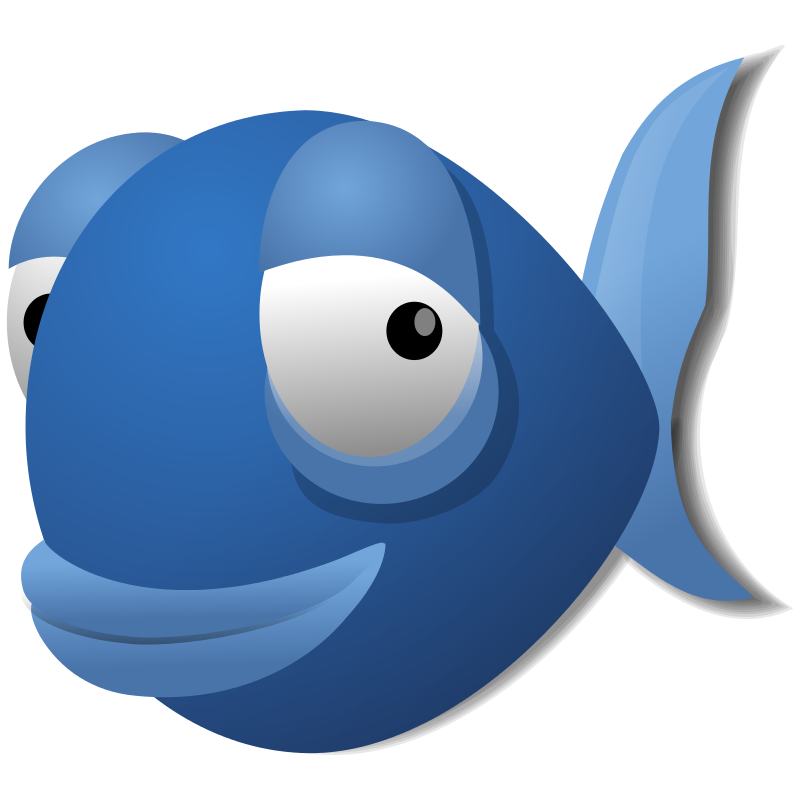

Diccionario
Infografía

  Las páginas web se crean utilizando el lenguaje HTML. Pero, ¿qué herramientas vamos a utilizar?
 Las páginas web se crean utilizando el lenguaje HTML. Pero, ¿qué herramientas vamos a utilizar?
Aunque podemos utilizar un simple documento de texto para escribir HTML, es preferible utilizar algún editor que nos ayude a realizar esta tarea.
En nuestro caso, vamos a utilizar el editor de código Bluefish.
En esta página os voy a enseñar todo lo necesario, para poder utilizar esta aplicación.
 Todo nuestro trabajo se va a desarrollar junto a esta aplicación. Por lo tanto, creo que sería interesante conocer un poco la historia de Bluefish.
Todo nuestro trabajo se va a desarrollar junto a esta aplicación. Por lo tanto, creo que sería interesante conocer un poco la historia de Bluefish.
Si os fijáis en la imagen de la izquierda, podréis ver a nuestro simpático pez azul que se asoma a la Wikipedia. De eso se trata, vamos a buscar la información de Bluefish dentro de la Wikipedia.
Aquí os dejo un artículo sobre Bluefish donde encontraréis toda la información sobre esta estupenda aplicación.
Seguro que cuando estabas haciendo esta actividad ha ocurrido algo que te ha hecho parar. Puede que alguien pegase a la puerta, que el profe haya hablado con alguien, que hayas oído un ruido en la calle, que te hayas acordado de algo que hiciste ayer…
Cuando aprendemos estamos rodeados de cosas que nos pueden distraer. Al volver a la actividad te cuesta más trabajo centrarte.
Por eso es importante que aprendas a controlar tus distracciones. Te doy algunos consejos:
¡Sigue así! ¡Nunca te rindas!
Después de leer el artículo de Bluefish, es el momento de que vuestro grupo recopile informacion sobre la aplicación Bluefish. Una forma de hacerlo puede ser contestando a las siguientes cuestiones:
No olvidéis anotar todo en un documento de texto en el ordenador que vuestro coordinador debe entregar en la TAREA 1 del proyecto "Webmaster" en nuestro Google Classroom.
Definición:
Representación gráfica que explica una información.
Ejemplo:
Podemos utilizar una infografía para explicar la historia de la aplicación Bluefish.
El editor Bluefish será una herramienta muy importante en el desarrollo de vuestro trabajo final. Es fundamental conocerla, para poder aprovechar todas sus características.
En la siguiente imagen interactiva se explica, las opciones más importantes, aquellas vais a necesitar para desarrollar vuestro trabajo.
El contenido se ha organizado en los siguientes apartados:
En esta actividad vas a trabajar de forma individual.
En la parte inferior de la siguiente imagen están los nombres, en color rojo, de los diferentes elementos del editor. Pincha y déjalo caer en su zona correspondiente.
Si no te sale bien a la primera, vuelve a intentarlo.
Si no recuerdas dónde van estos elementos, te recomiendo que veas el apartado anterior 4. Conoce el editor Bluefish.
Obra publicada con Licencia Creative Commons Reconocimiento No comercial Compartir igual 4.0